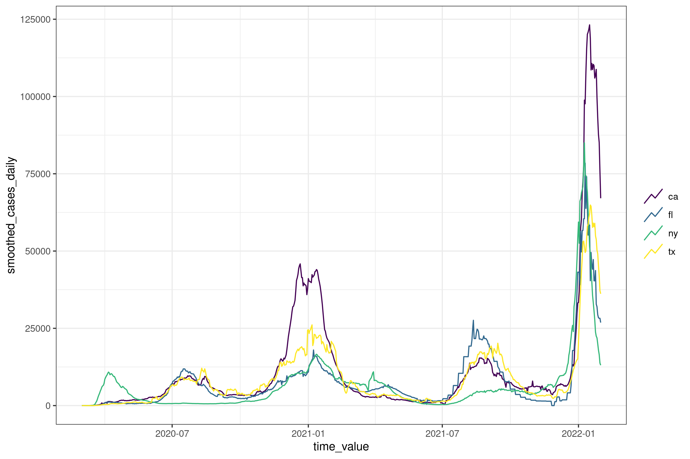

The epiprocess package works with epidemiological time series data and provides tools to manage, analyze, and process the data in preparation for modeling. It is designed to work in tandem with {epipredict}, which provides pre-built epiforecasting models and as well as tools to build custom models. Both packages are designed to lower the barrier to entry and implementation cost for epidemiological time series analysis and forecasting.
epiprocess contains:
-
epi_df()andepi_archive(), two data frame classes (that work like a tibble with dplyr verbs) for working with epidemiological time series data; - signal processing tools building on these data structures such as
-
epi_slide()for sliding window operations; -
epix_slide()for sliding window operations on archives; -
growth_rate()for computing growth rates; -
detect_outlr()for outlier detection; -
epi_cor()for computing correlations;
-
If you are new to this set of tools, you may be interested learning through a book format: Introduction to Epidemiological Forecasting.
You may also be interested in:
- epidatr, for accessing wide range of epidemiological data sets, including COVID-19 data, flu data, and more.
-
{rtestim}, a package for estimating the time-varying reproduction number of an epidemic.
This package is provided by the Delphi group at Carnegie Mellon University.
Installation
To install:
# Stable version
pak::pkg_install("cmu-delphi/epiprocess@main")
# Dev version
pak::pkg_install("cmu-delphi/epiprocess@dev")The package is not yet on CRAN.
Usage
Once epiprocess and epidatr are installed, you can use the following code to get started:
Get COVID-19 confirmed cumulative case data from JHU CSSE for California, Florida, New York, and Texas, from March 1, 2020 to January 31, 2022
df <- pub_covidcast(
source = "jhu-csse",
signals = "confirmed_cumulative_num",
geo_type = "state",
time_type = "day",
geo_values = "ca,fl,ny,tx",
time_values = epirange(20200301, 20220131),
as_of = as.Date("2024-01-01")
) %>%
select(geo_value, time_value, cases_cumulative = value)
df
#> # A tibble: 2,808 × 3
#> geo_value time_value cases_cumulative
#> <chr> <date> <dbl>
#> 1 ca 2020-03-01 19
#> 2 fl 2020-03-01 0
#> 3 ny 2020-03-01 0
#> 4 tx 2020-03-01 0
#> 5 ca 2020-03-02 23
#> 6 fl 2020-03-02 1
#> # ℹ 2,802 more rowsConvert the data to an epi_df object and sort by geo_value and time_value. You can work with an epi_df like you can with a tibble by using dplyr verbs
edf <- df %>%
as_epi_df(as_of = as.Date("2024-01-01")) %>%
arrange_canonical() %>%
group_by(geo_value) %>%
mutate(cases_daily = cases_cumulative - lag(cases_cumulative, default = 0))
edf
#> An `epi_df` object, 2,808 x 4 with metadata:
#> * geo_type = state
#> * time_type = day
#> * as_of = 2024-01-01
#>
#> # A tibble: 2,808 × 4
#> # Groups: geo_value [4]
#> geo_value time_value cases_cumulative cases_daily
#> * <chr> <date> <dbl> <dbl>
#> 1 ca 2020-03-01 19 19
#> 2 ca 2020-03-02 23 4
#> 3 ca 2020-03-03 29 6
#> 4 ca 2020-03-04 40 11
#> 5 ca 2020-03-05 50 10
#> 6 ca 2020-03-06 68 18
#> # ℹ 2,802 more rowsCompute the 7 day moving average of the confirmed daily cases for each geo_value
edf <- edf %>%
group_by(geo_value) %>%
epi_slide_mean(cases_daily, .window_size = 7, na.rm = TRUE) %>%
rename(smoothed_cases_daily = slide_value_cases_daily)
edf
#> An `epi_df` object, 2,808 x 5 with metadata:
#> * geo_type = state
#> * time_type = day
#> * as_of = 2024-01-01
#>
#> # A tibble: 2,808 × 5
#> # Groups: geo_value [4]
#> geo_value time_value cases_cumulative cases_daily smoothed_cases_daily
#> * <chr> <date> <dbl> <dbl> <dbl>
#> 1 ca 2020-03-01 19 19 19
#> 2 ca 2020-03-02 23 4 11.5
#> 3 ca 2020-03-03 29 6 9.67
#> 4 ca 2020-03-04 40 11 10
#> 5 ca 2020-03-05 50 10 10
#> 6 ca 2020-03-06 68 18 11.3
#> # ℹ 2,802 more rowsAutoplot the confirmed daily cases for each geo_value
